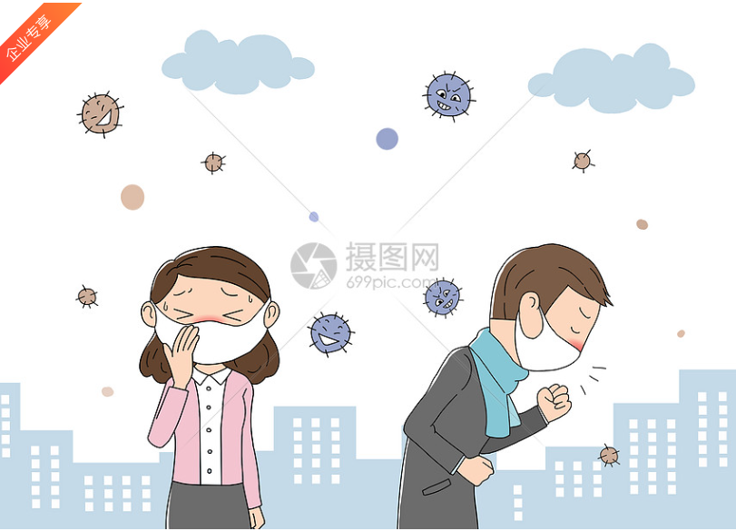
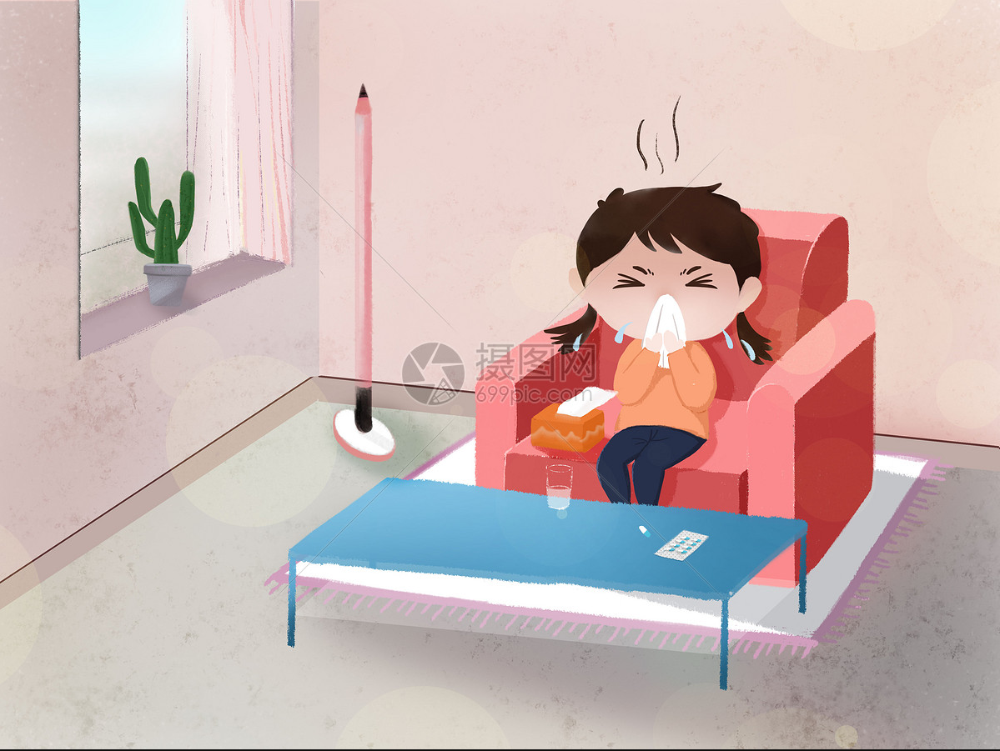

关于流感，您需要知道这些！
01流感是如何传播的？
流感患者和隐性感染者是流感的主要传染源。可通过打喷嚏、咳嗽等飞沫传播直接感染；也可以通过口腔、鼻腔、眼睛等黏膜直接或间接接触感染；还可以通过接触被病毒污染的物品而感染；在相对封闭、空气流通不好的场所，也可能通过气溶胶的形式传播。

03如何预防流感？
积极接种流感疫苗；在流感流行季节，尽量减少去人员密集的场所；规范佩戴口罩，做好手卫生；尽量避免与有呼吸道疾病症状的人密切接触；室内勤通风，每日至少开窗通风2次，每次通风不少于30分钟。

04 现在还可以接种流感疫苗吗？现在接种会不会太晚？
疫苗接种后，两周左右可产生有效的抗体。目前正处于流感流行期，2022年未接种流感疫苗的人群，仍建议接种。
05流感的潜伏期是否具有传染性？
潜伏期末期就有传染性，发病后3-5天传染性强，合并肺炎和免疫低下人群的传染期更长一些。
06得了流感会有哪些症状？
流感起病急，大多为自限性。主要以发热、头痛、肌痛和全身不适起病，体温可达39-40℃，可有畏寒、寒战，多伴肌肉关节酸痛、乏力、食欲减退等全身症状，常有咽喉痛、干咳，可有鼻塞、流涕、胸骨后不适、颜面潮红、眼结膜充血等。 部分患者症状轻微或无症状。轻症流感常与普通感冒表现相似，但其发热和全身症状更明显。重症病例可出现病毒性肺炎、继发细菌性肺炎、急性呼吸窘迫综合征、休克、弥漫性血管内凝血、心血管和神经系统等肺外表现及多种并发症，甚至死亡。